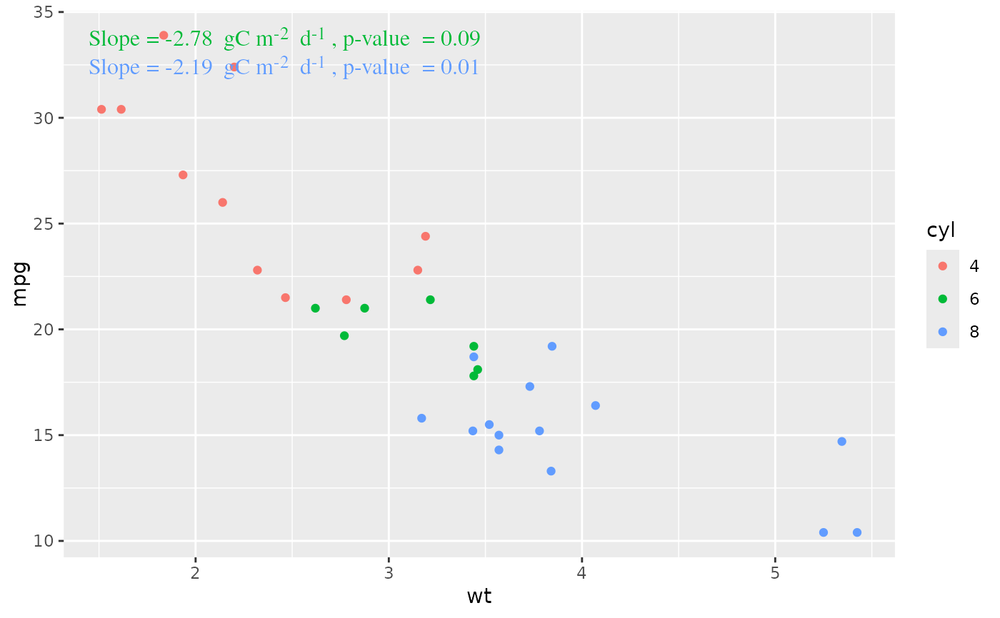
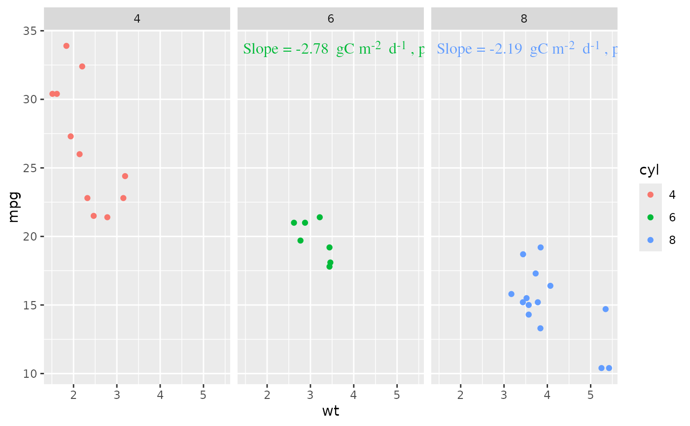
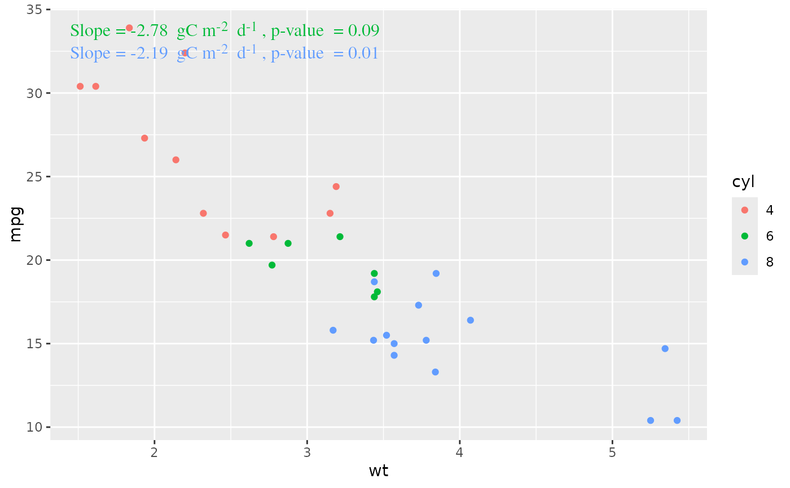
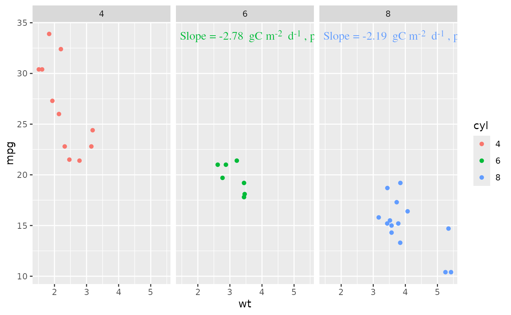

stat of regression coefficient and good-of-fitting information
stat_gof.Rdstat of regression coefficient and good-of-fitting information
stat_gof(
mapping = NULL,
data = NULL,
format = "NSE = {str_num(NSE,2)}, R^2 = {str_num(R2, 2)} \n RMSE = {str_num(RMSE,2)}",
x = 0,
y = 1,
hjust = 0,
vjust = 1,
mar = 0.02,
show.bias = TRUE
)
stat_reg(
mapping = NULL,
data = NULL,
formula = y ~ x,
digits = 2,
unit = "",
format = "slope = {str_num(b[2, \"estimate\"], digits)}{unit}, pvalue = {str_num(b[2, \"p.value\"], digits)} \n R^2 = {str_num(s$r.squared, digits)}",
x = 0,
y = 1,
hjust = 0,
vjust = 1,
mar = 0.02,
height.factor = 1.2,
color = NULL,
position = "dodge",
...
)Arguments
- data
an optional data frame, list or environment (or object coercible by
as.data.frameto a data frame) containing the variables in the model. If not found indata, the variables are taken fromenvironment(formula), typically the environment from whichlmis called.- x
Unit objects specifying the location of the reference point.
- y
Unit objects specifying the location of the reference point.
- hjust
Numerical values specifying the justification of the text boxes relative to
xandy. These justification parameters are specified in the internal reference frame of the text boxes, so that, for example,hjustadjusts the vertical justification when the text is rotated 90 degrees to the left or right.- vjust
Numerical values specifying the justification of the text boxes relative to
xandy. These justification parameters are specified in the internal reference frame of the text boxes, so that, for example,hjustadjusts the vertical justification when the text is rotated 90 degrees to the left or right.- formula
an object of class
"formula"(or one that can be coerced to that class): a symbolic description of the model to be fitted. The details of model specification are given under ‘Details’.- position
"dodge" or "identity"
- ...
other parameters to
gggrid::grid_panel()
Details
b: the object returned bybroom::tidy()s: the object returned bybroom::glance()
Examples
library(ggplot2)
library(data.table)
dat <- data.table(mtcars)
dat$cyl <- as.factor(dat$cyl)
table(dat$cyl)
#>
#> 4 6 8
#> 11 7 14
ggplot(dat, aes(wt, mpg, color = cyl)) +
geom_point() +
stat_reg(data = dat[cyl != 4], y = 1, mar = 0, position = "none") +
facet_wrap(~cyl)
 ggplot(dat, aes(wt, mpg, color = cyl)) +
geom_point() +
stat_reg(data = dat[cyl != 4], y = 1,
position = "dodge",
height.factor = 1.2,
unit = "gC m^-2 d^-1")

ggplot(dat, aes(wt, mpg, color = cyl)) +
geom_point() +
stat_reg(data = dat[cyl != 4], y = 1,
position = "none",
height.factor = 1.2,
unit = "gC m^-2 d^-1") +
facet_wrap(~cyl)

ggplot(dat, aes(wt, mpg, color = cyl)) +
geom_point() +
stat_gof(x = 0, y = 1) +
# stat_reg(data = subset(dat, cyl == 4), y = 1, color = "red") +
# stat_reg(data = subset(dat, cyl == 6), y = 0.8) +
facet_wrap(~cyl)
ggplot(dat, aes(wt, mpg, color = cyl)) +
geom_point() +
stat_reg(data = dat[cyl != 4], y = 1,
position = "dodge",
height.factor = 1.2,
unit = "gC m^-2 d^-1")

ggplot(dat, aes(wt, mpg, color = cyl)) +
geom_point() +
stat_reg(data = dat[cyl != 4], y = 1,
position = "none",
height.factor = 1.2,
unit = "gC m^-2 d^-1") +
facet_wrap(~cyl)

ggplot(dat, aes(wt, mpg, color = cyl)) +
geom_point() +
stat_gof(x = 0, y = 1) +
# stat_reg(data = subset(dat, cyl == 4), y = 1, color = "red") +
# stat_reg(data = subset(dat, cyl == 6), y = 0.8) +
facet_wrap(~cyl)